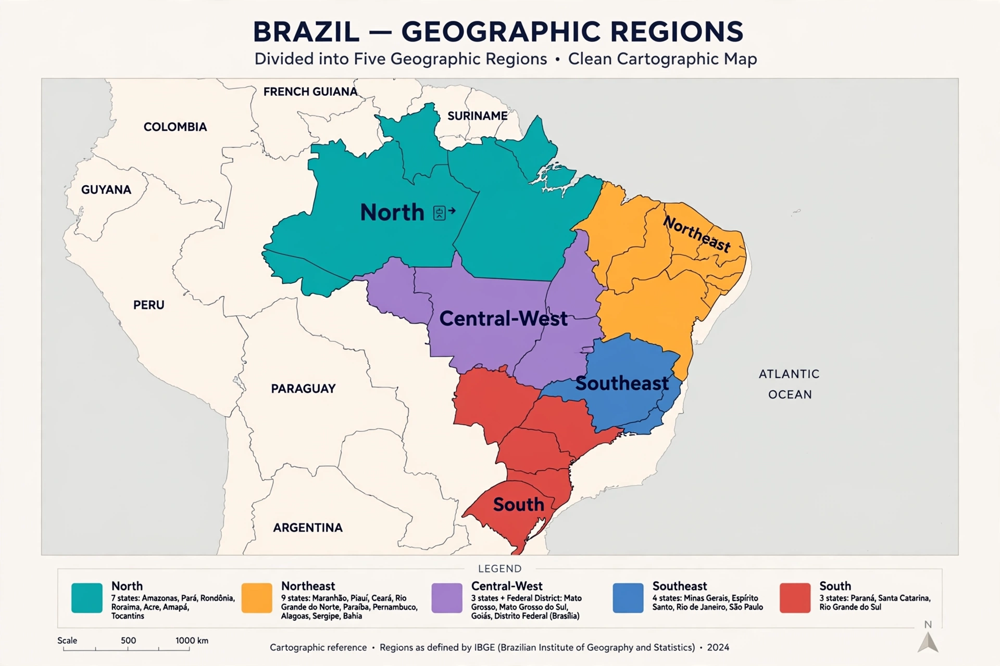

The regions of Brazil are five major groupings of the country's states used by the Brazilian Institute of Geography and Statistics (IBGE) for statistical and administrative purposes. They are not political or administrative entities in themselves, and states may not be subdivided between regions. The division, formalised in 1969 and adjusted when new states were created, groups states with similar physical, cultural, economic, and historical characteristics.
| Region | States | Largest city | Character |
|---|---|---|---|
| North | Acre, Amapá, Amazonas, Pará, Rondônia, Roraima, Tocantins | Manaus | Amazon rainforest; largest by area, least populous |
| Northeast | Alagoas, Bahia, Ceará, Maranhão, Paraíba, Pernambuco, Piauí, Rio Grande do Norte, Sergipe | Salvador | Historic colonial coast; semi-arid sertão interior |
| Central-West | Goiás, Mato Grosso, Mato Grosso do Sul, Federal District | Brasília | Cerrado savanna and Pantanal; agribusiness frontier |
| Southeast | Espírito Santo, Minas Gerais, Rio de Janeiro, São Paulo | São Paulo | Industrial and financial core; most populous region |
| South | Paraná, Rio Grande do Sul, Santa Catarina | Curitiba / Porto Alegre | Temperate climate; strong European immigrant heritage |
Regional divisions of Brazil were proposed as early as 1913, but the modern five-region scheme derives from the IBGE's 1945 division, revised in 1969 and adapted to constitutional changes: the creation of Mato Grosso do Sul (1977), Rondônia, and the 1988 elevation of Tocantins and the former territories of Amapá and Roraima to statehood.
The North covers some 45% of Brazil's territory, dominated by the Amazon Basin and its rainforest. The Northeast, the oldest colonised area, combines a humid coastal strip with the drought-prone sertão. The Central-West contains the capital, Brasília, and has become a centre of soybean and cattle production. The Southeast concentrates industry, finance, and the largest metropolitan areas. The South is the smallest and generally wealthiest region per capita, noted for its temperate seasons.